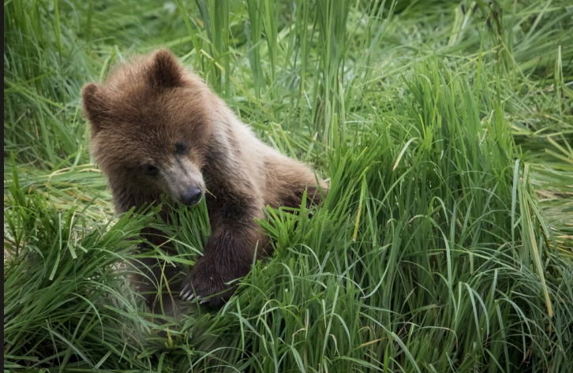
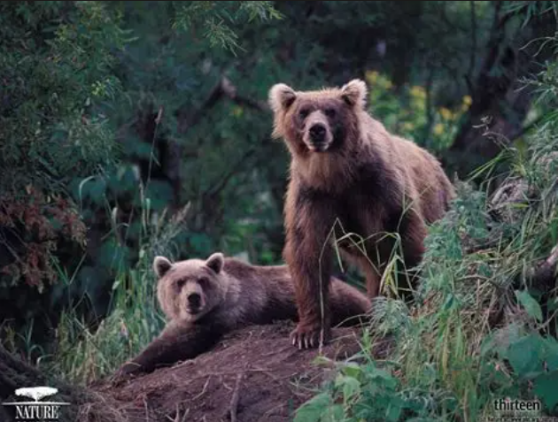
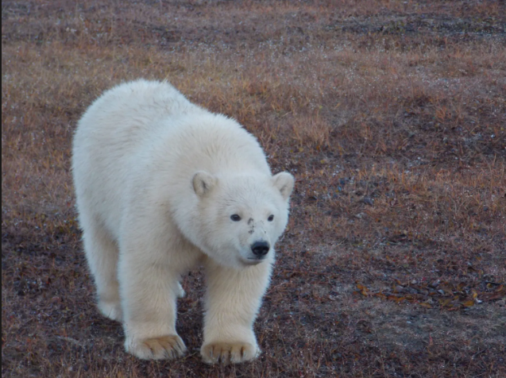
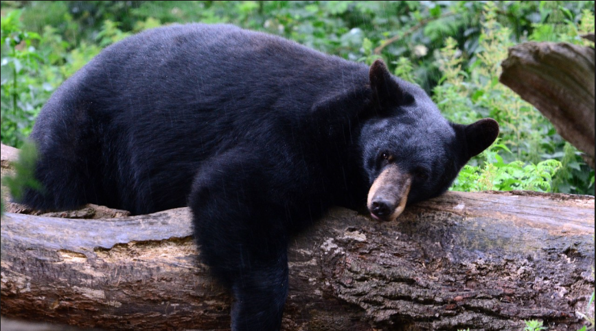

Foraging for Food
Bears spend a large part of their day searching for food.
They eat berries, fish, honey, and small animals depending on their habitat and season.
Into the Bear World

Step into the fascinating world of bears and explore their unique species,natural habitats, eating habits, and amazing behaviors.
Learn fun facts and discover why bears are among the most remarkable animals in the wild.
Bears play an important role in maintaining healthy ecosystems.
They help spread seeds, control animal populations, and contribute to the balance of nature.
Although they are known for their strength, most bears prefer to avoid humans and live peacefully in the wild.
Protecting their habitats is essential to ensuring their survival for future generations.
Bears are powerful mammals found across forests, mountains, and icy regions. Here are some of the most well-known species around the world.
Found in North America, Europe, and Asia. Known for strength and adaptability.
Lives in the Arctic and is the largest land carnivore on Earth.
Common in North America, excellent climbers and very adaptable.
Native to China, mostly eats bamboo and is a global conservation symbol.
Found in the Indian subcontinent, known for its shaggy coat.
South America’s only bear species, recognized by markings around eyes.
Bears spend a large part of their day searching for food.
They eat berries, fish, honey, and small animals depending on their habitat and season.
Bears love to rest for long hours, especially after eating.
During winter, some species enter a deep sleep called hibernation to save energy.
Bears are curious animals that roam forests, mountains, and rivers.
They use their strong senses to explore and survive in the wild..
Explore the beauty of bears in their natural habitats. From forests to snowy mountains, discover how they live, eat, and play in the wild.



